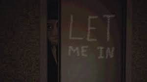
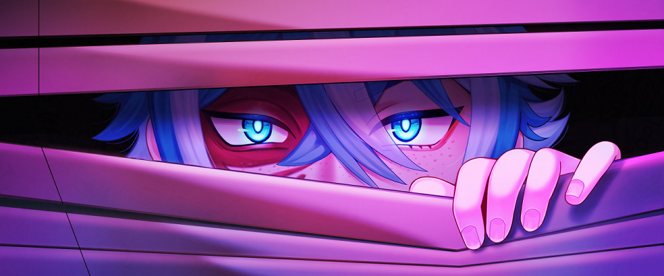
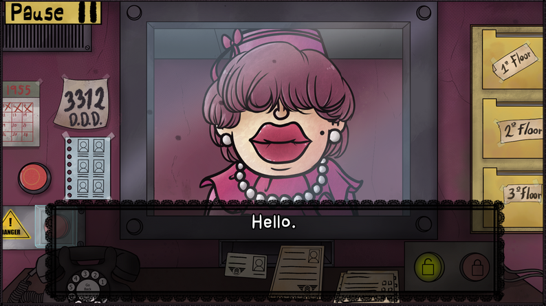
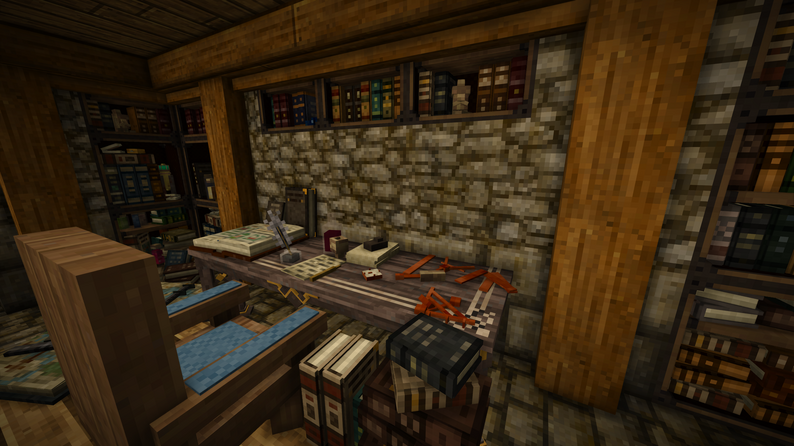
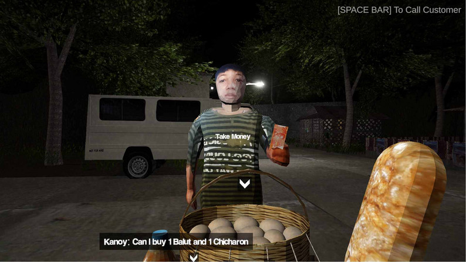

Let Me In
It’s a quiet, peaceful night—just you, your favorite TV show, and nothing to worry about. You can kick back, relax, and soak in the calm. But wait… was that a knock? Looks like you’ve got a visitor. And not just any visitor—someone a little off. They look strange. They talk even stranger. One thing’s for sure… you definitely weren’t expecting them.

Kiosk
You’re working the night shift at the new food kiosk, serving up snacks to whoever wanders by. It’s quiet, almost too quiet. But something feels… off. You can’t shake the feeling that there’s more to this place than meets the eye. You start digging, trying to piece together what happened to the guy who worked the shift before you. All you’ve got are whispers and half-finished stories. But you’re determined to find out. After all, it’s your turn now, and you’re not about to let whatever happened slide under the radar.

Killer Trait
Would you team up with a serial killer to take down your worst enemy? Sounds crazy, right? But think about it… You’ve got a score to settle, and this person has a very unique set of skills. They’re ruthless, precise, and have a knack for making people disappear. Maybe it’s a match made in chaotic heaven. But then again, there’s always that nagging feeling—could you trust someone like that? Are you crossing a line that can never be uncrossed?

Thats Not My Neighbor
The Doppelganger Detection Department (D.D.D.) needs you!
You’ve got bills to pay, and the doorman job in your building is all that’s available. It’s 1955, and doppelgangers are popping up more than ever. The D.D.D. is on high alert, and you’re on the front lines.
Your job? Let the right people in. Easy, right? But don’t get too comfy—you can’t afford to miss a single detail. One wrong move, and you might just become the next snack for a doppelganger.

Vintage Story
Vintage Story is a wilderness survival sandbox game that doesn’t pull any punches. Think eldritch horror meets nature’s reclaiming force. You’re thrown into a world that’s fallen apart, where eerie time distortions lurk at every corner. Experience the dawn of human civilization or forge your own wild path in this hauntingly beautiful world.

Hapunan
Hapunan is a story-driven horror game rooted in Filipino culture. Created with Unity, it’s my first game release, and I wanted to give players a truly unique experience. I poured a lot of passion into this project, and I hope you have as much fun playing it as I had making it!